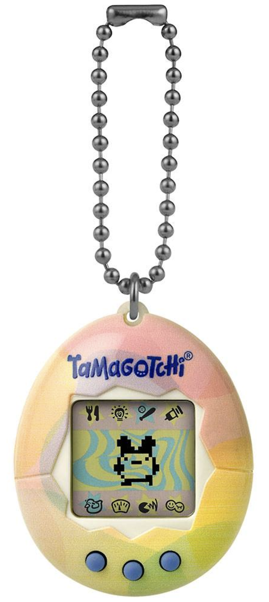
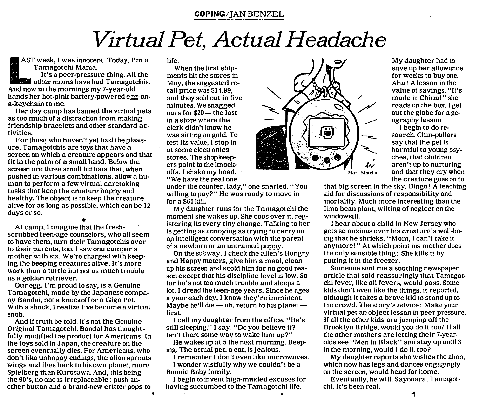
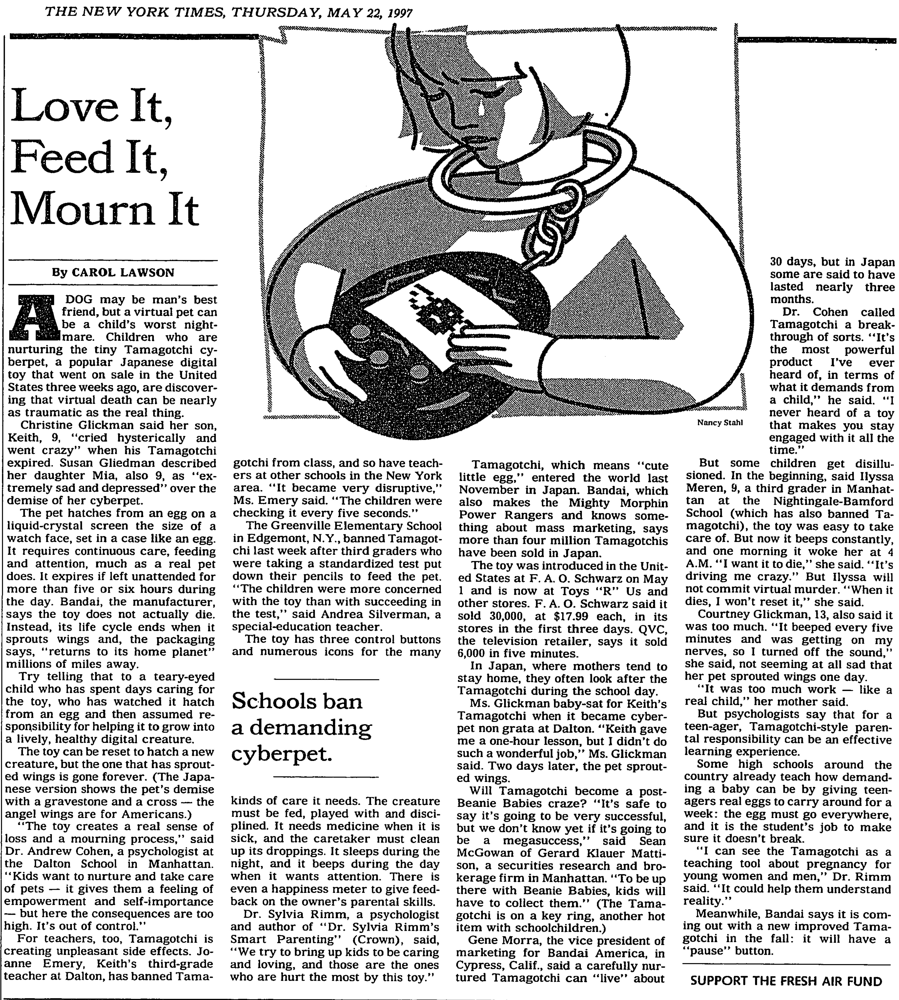
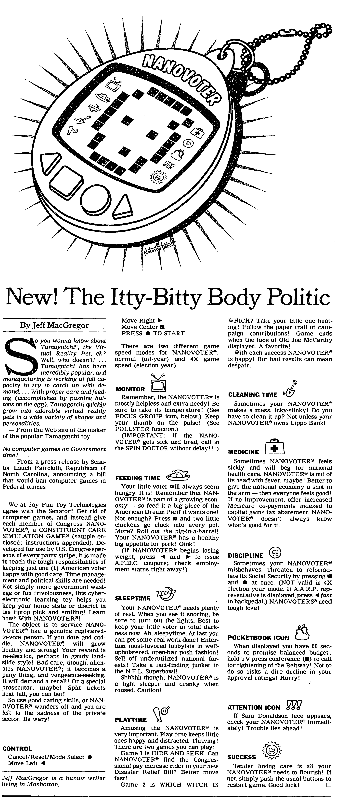

The Tamagotchi is a pocket sized virtual pet created by Akihiro Yokoi and Aki Maita. First released in Japan on November 23, 1996, and later in the US on May 28, 1997, it became an instant sensation. The story goes that Yokoi was inspired by a child who, in a commercial, was attempting to sneak his pet turtle on a trip. With help from Maita, “Egg Watch” aka Tamagotchi was started. The two creators were awarded the 1997 Ig Nobel Prize for economics for the first virtual pet. The Tamagotchi would later inspire other digital pets like Nano Pets and Giga Pets. In the years that followed its release, the term the “Tamagotchi effect” was coined in reference to an emotional attachment to computers and robots, which brought some cause for concern in children’s psychology. This raises the question: how does having a digital companion affect a child’s development, and in a world with increasingly more virtual interaction, how will this reshape human connection and society? Fun in Game Backstory - from Tamagotchi WikiThe Tamagotchi are a race of aliens from the far distant Tamagotchi Planet, described as being "millions of miles" from The Earth. The Tamagotchis lived peacefully on their planet until one fateful day, when a disgruntled Oyajitchi made the Planet drink his bottle of sake, causing it to become drunk. With the Planet uninhabitable, the Tamagotchis fled aboard UFOs to find another planet to live on while waiting for their home to sober up.
|
 |
articles published in The New York Times about Tamagotchis from May 1997 - Aug 1997.
|   |  |